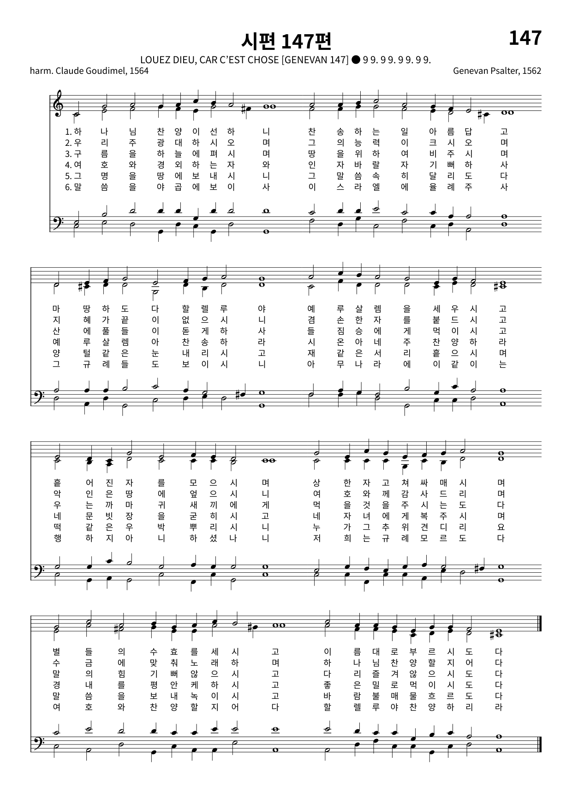

Psalm 147
LOUEZ DIEU, CAR C’EST CHOSE [GENEVAN 147] · 9 9. 9 9. 9 9. 9 9.
English title: Come, Praise the LORD! ’Tis Good and Pleasant
Tune: Genevan Psalter, 1562 · Harmony: Claude Goudimel, 1564 · Lyrics: Korean adaptation of Psalm 147 from the Korean Revised Version (AI draft adaptation · not yet theologically reviewed) · 6 stanzas
Score PDF MusicXML (for printing) MusicXML (for accompaniment, with prelude and repeats) Read Psalm 147 (Korean Revised Version)
Score
← Psalm 146 ListAccompaniment (in preparation)Psalm 148 →
Lyrics (Korean)
Stanza 1
하나님 찬양이 선하니
찬송하는 일 아름답고
마땅하도다 할렐루야
예루살렘을 세우시고
흩어진 자를 모으시며
상한 자 고쳐 싸매시며
별들의 수효를 세시고
이름대로 부르시도다
하나님 찬양이 선하니
찬송하는 일 아름답고
마땅하도다 할렐루야
예루살렘을 세우시고
흩어진 자를 모으시며
상한 자 고쳐 싸매시며
별들의 수효를 세시고
이름대로 부르시도다
Stanza 2
우리 주 광대하시오며
그의 능력이 크시오며
지혜가 끝이 없으시니
겸손한 자를 붙드시고
악인은 땅에 엎으시니
여호와께 감사드리며
수금에 맞춰 노래하며
하나님 찬양할지어다
우리 주 광대하시오며
그의 능력이 크시오며
지혜가 끝이 없으시니
겸손한 자를 붙드시고
악인은 땅에 엎으시니
여호와께 감사드리며
수금에 맞춰 노래하며
하나님 찬양할지어다
Stanza 3
구름을 하늘에 펴시며
땅을 위하여 비 주시며
산에 풀들이 돋게 하사
들짐승에게 먹이시고
우는 까마귀 새끼에게
먹을 것을 주시는도다
말의 힘 기뻐 않으시고
다리 즐겨 않으시도다
구름을 하늘에 펴시며
땅을 위하여 비 주시며
산에 풀들이 돋게 하사
들짐승에게 먹이시고
우는 까마귀 새끼에게
먹을 것을 주시는도다
말의 힘 기뻐 않으시고
다리 즐겨 않으시도다
Stanza 4
여호와 경외하는 자와
인자 바랄 자 기뻐하사
예루살렘아 찬송하라
시온아 네 주 찬양하라
네 문빗장을 굳히시고
네 자녀에게 복 주시며
경내를 평안케 하시고
좋은 밀로 먹이시도다
여호와 경외하는 자와
인자 바랄 자 기뻐하사
예루살렘아 찬송하라
시온아 네 주 찬양하라
네 문빗장을 굳히시고
네 자녀에게 복 주시며
경내를 평안케 하시고
좋은 밀로 먹이시도다
Stanza 5
그 명을 땅에 보내시니
그 말씀 속히 달리도다
양털 같은 눈 내리시고
재 같은 서리 흩으시며
떡 같은 우박 뿌리시니
누가 그 추위 견디리요
말씀을 보내 녹이시고
바람 불매 물 흐르도다
그 명을 땅에 보내시니
그 말씀 속히 달리도다
양털 같은 눈 내리시고
재 같은 서리 흩으시며
떡 같은 우박 뿌리시니
누가 그 추위 견디리요
말씀을 보내 녹이시고
바람 불매 물 흐르도다
Stanza 6
말씀을 야곱에 보이사
이스라엘에 율례 주사
그 규례들도 보이시니
아무 나라에 이같이는
행하지 아니 하셨나니
저희는 규례 모르도다
여호와 찬양할지어다
할렐루야 찬양하리라
말씀을 야곱에 보이사
이스라엘에 율례 주사
그 규례들도 보이시니
아무 나라에 이같이는
행하지 아니 하셨나니
저희는 규례 모르도다
여호와 찬양할지어다
할렐루야 찬양하리라